Control a Physical iPhone from macOS with Appium
Date: 2026-06-25
Status: Verified locally
System: macOS, Xcode, Appium, XCUITest, WebDriverAgent, physical iPhone
Sensitive data: Masked
Last verified: 2026-06-25
Goal
Set up a Mac and a physical iPhone so Appium can control the iPhone over USB for repeatable automation work.
The working end state is:
- The iPhone appears in Xcode as a trusted physical device.
- Xcode has an Apple account, personal team, and Apple Development certificate.
- WebDriverAgentRunner installs and runs on the iPhone.
- Appium can take screenshots, read UI source, tap, swipe, type, open apps, and close sessions.
This guide assumes the engineer is using a Mac and iPhone for the first time.
What This Setup Does
- Appium runs an HTTP automation server on the Mac.
- The XCUITest driver builds and installs WebDriverAgent on the iPhone.
- WebDriverAgent uses Apple's XCTest APIs to interact with the phone.
- The phone remains a normal non-jailbroken iPhone.
- The USB cable stays connected during the setup and the first reliability test.
Concepts
- Xcode: Apple's IDE and build toolchain. Physical iPhone automation depends on Xcode because WebDriverAgent is an iOS test runner that must be built and signed.
- Xcode Command Line Tools: Terminal tools such as
xcodebuild,xcrun, andxctrace. Appium uses these tools behind the scenes. - Apple account: The account added inside Xcode. A free personal team is enough for local physical-device testing.
- Team ID: Apple's identifier for the development team. Appium uses it through
appium:xcodeOrgId. - Certificate: A signing identity stored in the Mac keychain. For this setup, use an
Apple Developmentcertificate. - Private key: The secret key paired with the certificate. It stays on the Mac and should not be copied into documentation or scripts.
- Bundle identifier: A reverse-DNS app identifier, for example
com.example.WebDriverAgentRunner. - Provisioning profile: Apple's signed permission file that connects a team, certificate, app identifier, and allowed device.
- Entitlement: A signed app permission. Xcode embeds entitlements into the signed app when needed.
- Developer profile on iPhone: The iPhone-side trust entry created when a development-signed app is installed.
- Developer Mode: iOS setting required on iOS 16 and later before development-signed apps can run reliably.
- WebDriverAgent: The XCTest server app that Appium installs on the phone.
- UDID: The unique device identifier. Treat it as sensitive and mask it in public docs.
Final Configuration
- Mac: macOS with Xcode installed.
- Package manager: Homebrew.
- Node.js: installed through Homebrew or another trusted package manager.
- Appium: installed globally with
npm. - Appium driver:
xcuitest. - iPhone: trusted over USB, Developer Mode enabled.
- WDA bundle ID: use your own unique value, for example
com.example.WebDriverAgentRunner.
Mac Setup
1. Install Xcode
Open the Mac App Store, search for Xcode, and install it.
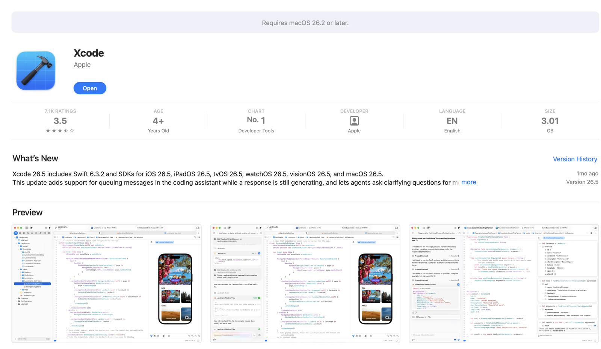
After installation, open Xcode once. If Xcode asks to install additional components or device support, allow it to finish.
Check Xcode from Terminal:
Expected output shape:
Point command line tools at the full Xcode app:
Expected output:
If Xcode asks for a license agreement:
No output is also acceptable if the license was already accepted.
2. Install Homebrew
Install Homebrew from Terminal:
Expected output shape:
==> Installation successful!
==> Next steps:
- Run these commands in your terminal to add Homebrew to your PATH
Follow the exact eval or echo ... >> ~/.zprofile instructions printed by Homebrew.
Verify:
Expected output shape:
3. Install USB and iOS helper tools
Install tools used for diagnostics and fallback device inspection:
Expected output shape:
==> Pouring node--...
==> Pouring ios-deploy--...
==> Pouring libimobiledevice--...
==> Pouring ideviceinstaller--...
Verify Node and npm:
Expected output shape:
Verify USB tools:
Expected output shape:
Install pymobiledevice3 as an optional diagnostic backup.
pymobiledevice3is a Python CLI for inspecting and troubleshooting iOS devices.- The upstream project documents
python3 -m pip install -U pymobiledevice3. - This guide uses
pipxbecause Homebrew-managed Python on macOS often blocks globalpipinstalls. pipxcreates a separate virtual environment for the command and exposespymobiledevice3on your shell path.- If
pipx ensurepathsays it changed your shell path, open a new Terminal tab before runningpymobiledevice3.
Expected output shape:
Success! Added ... to the PATH environment variable.
installed package pymobiledevice3 ...
These apps are now globally available
- pymobiledevice3
Device:
Identifier: <masked-device-udid>
ConnectionType: USB
Appium Setup
4. Install Appium
Install Appium globally with npm:
Expected output:
Install the XCUITest driver:
Expected output shape:
✔ Installing 'xcuitest' using NPM install spec 'appium-xcuitest-driver'
xcuitest@11.14.1 [installed (npm)]
Install Appium Doctor:
Expected output shape:
Use Appium Doctor as a checklist, not as the only source of truth:
Expected output shape:
info AppiumDoctor ### Diagnostic starting ###
info AppiumDoctor ✔ Xcode is installed
info AppiumDoctor ✔ xcodebuild exists
Xcode Account and Signing
5. Add an Apple account in Xcode
Open:
Add your Apple account. After sign-in, open the account's Personal Team.
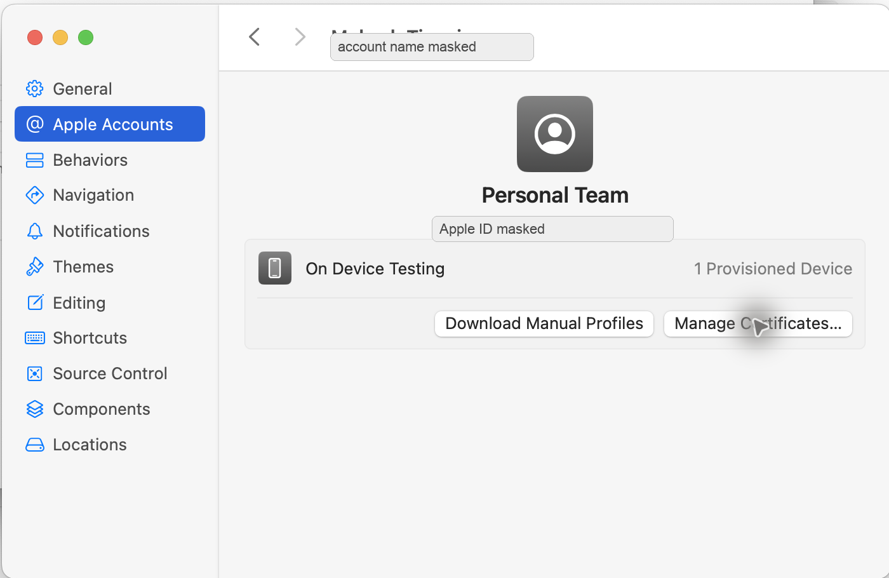
6. Create an Apple Development certificate
In the same team detail screen, click:
If there is no certificate:
- Click
+. - Choose
Apple Development. - Wait for Xcode to create the certificate.
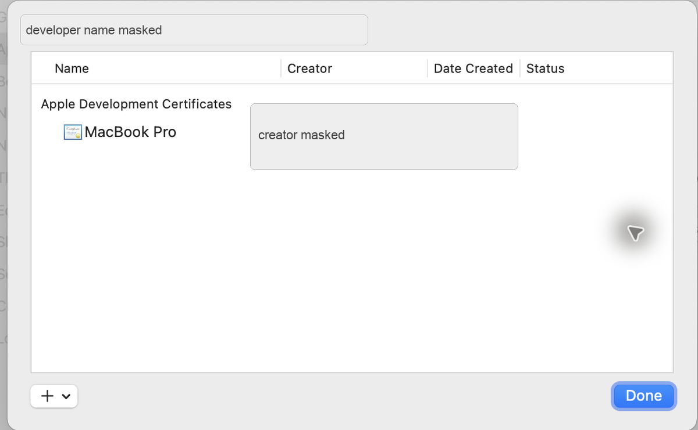
The certificate and private key stay in the Mac keychain. Do not paste keychain exports, .p12 files, or certificate passwords into documentation.
iPhone Setup
7. Connect and trust the iPhone
Connect the iPhone to the Mac with a USB cable.
On the iPhone, accept:
Enter the iPhone passcode if prompted.
This trust popup appears before Appium can capture screenshots. Verify the result in Xcode instead:
The iPhone should appear under Connected.
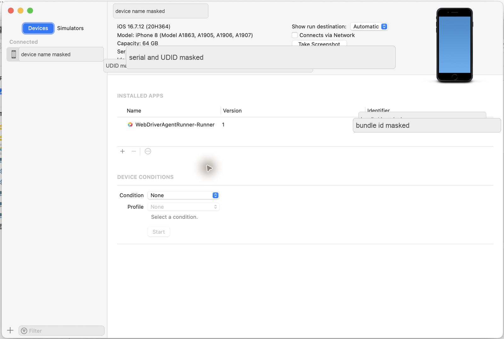
Verify from Terminal:
Expected output shape:
Also verify USB visibility:
Expected output shape:
8. Keep the iPhone stable during setup
On the iPhone, keep these temporary setup defaults:
- Keep the phone unlocked.
- Keep the USB cable connected.
- Disable short auto-lock temporarily.
- Stay near the Home screen or Settings app during first setup.
- Avoid passcode prompts while WebDriverAgent is launching.
Start from the iPhone Settings app:
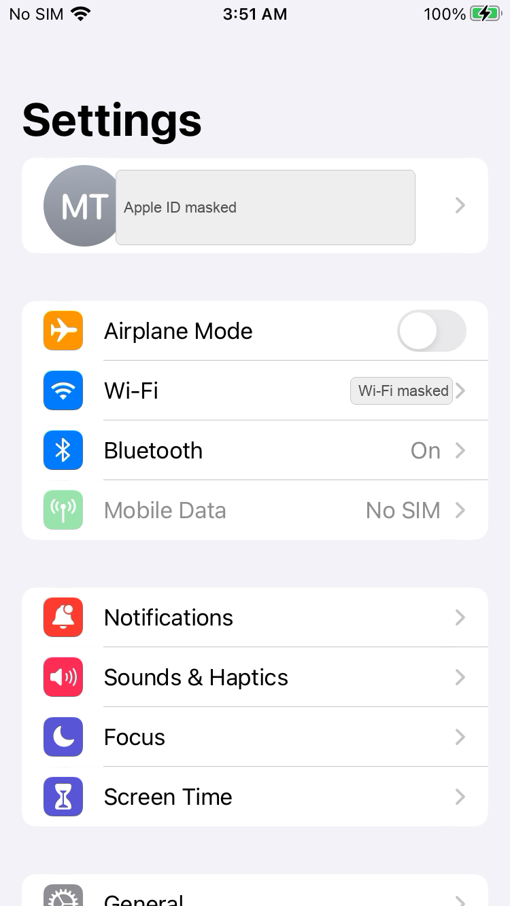
9. Enable Developer Mode
Open:
Developer Mode appears near the bottom of Privacy & Security.
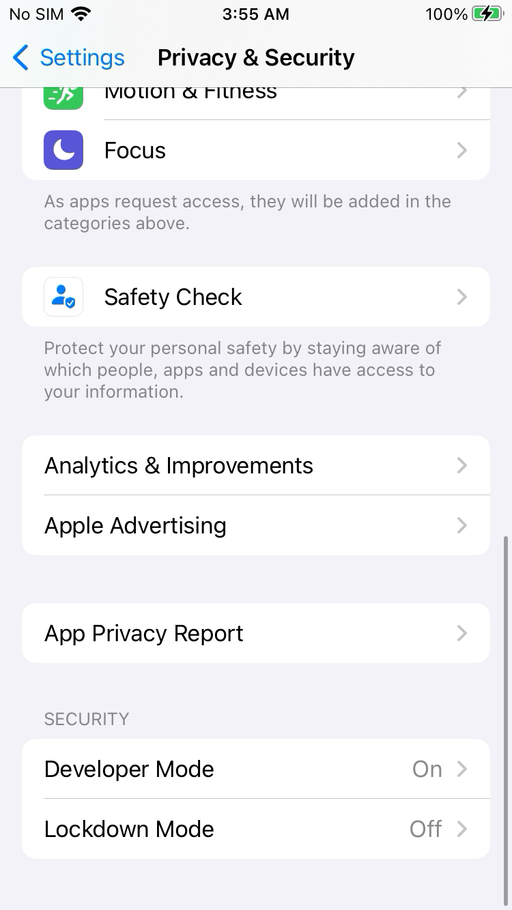
Open Developer Mode, turn it on, and restart the iPhone if iOS asks.
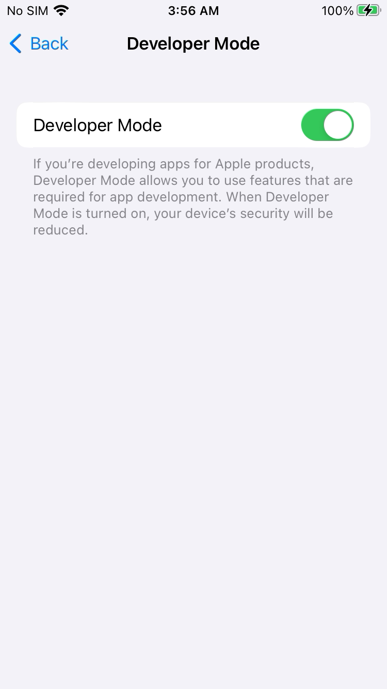
10. Enable UI Automation
Open:
The Developer row appears in Settings after Developer Mode is available.
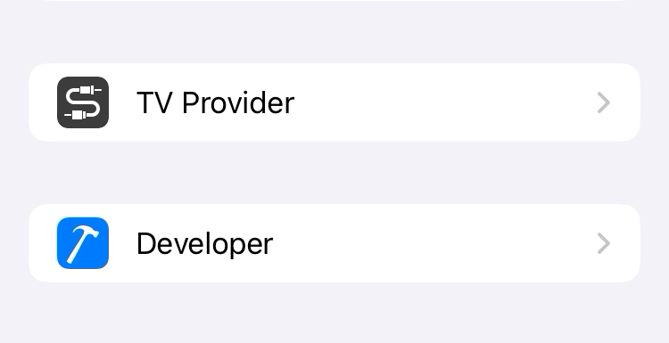
Turn on:
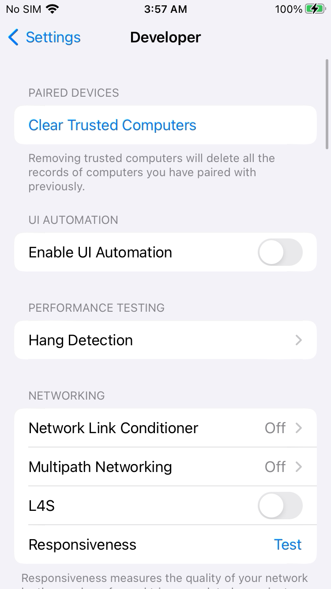
11. Trust the WebDriverAgent developer app
After WebDriverAgent is installed for the first time, open:
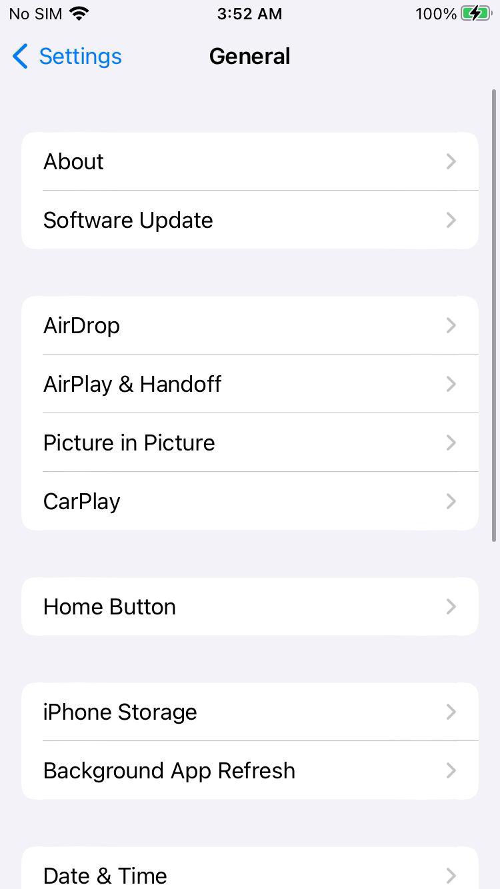
Scroll to VPN & Device Management.
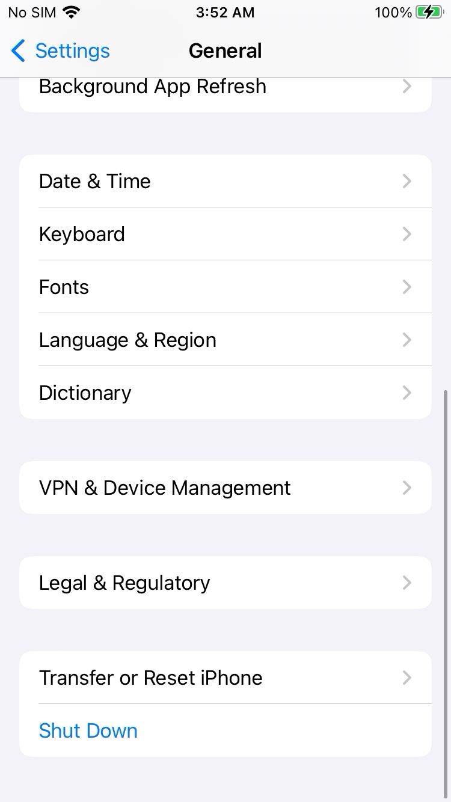
Open the developer app profile.
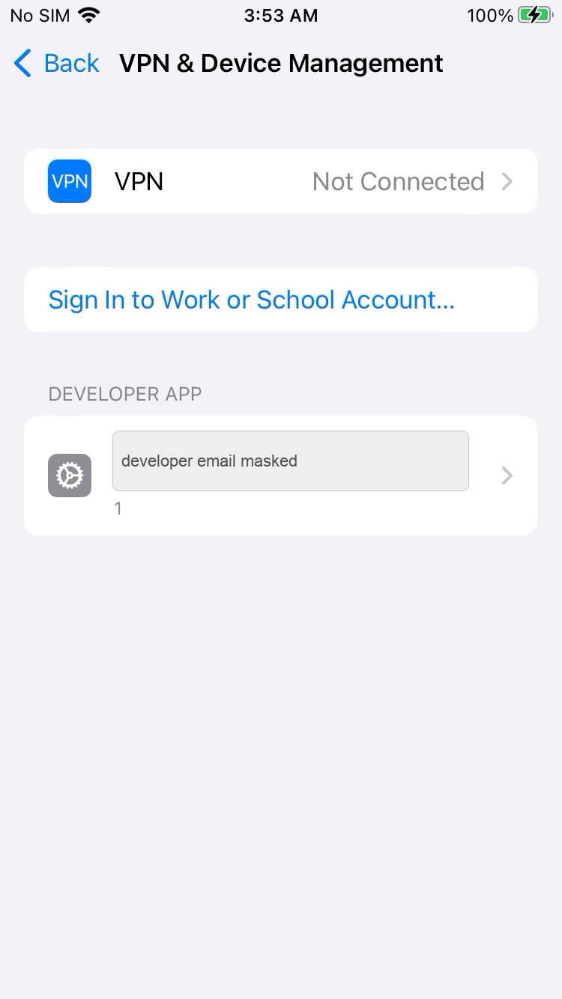
Trust the developer profile if iOS asks. A trusted WebDriverAgent profile looks like this:
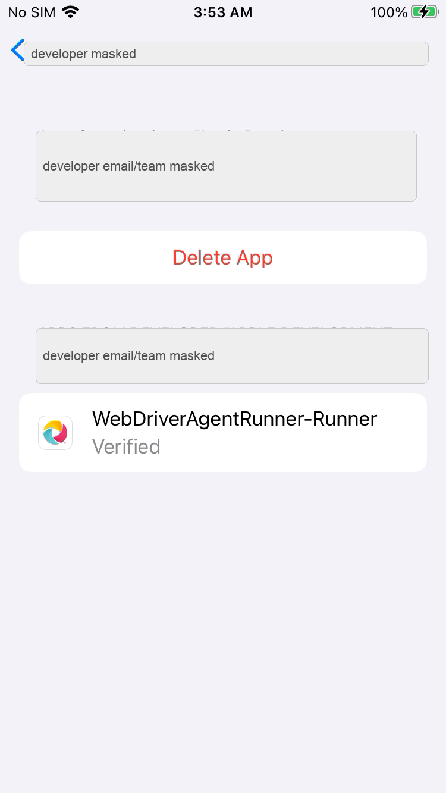
WebDriverAgent Setup
12. Locate WebDriverAgent
After installing the XCUITest driver, WebDriverAgent is inside the Appium driver folder.
Find it:
Expected output shape:
/Users/<mac-user>/.appium/node_modules/appium-xcuitest-driver/node_modules/appium-webdriveragent/WebDriverAgent.xcodeproj
Open it:
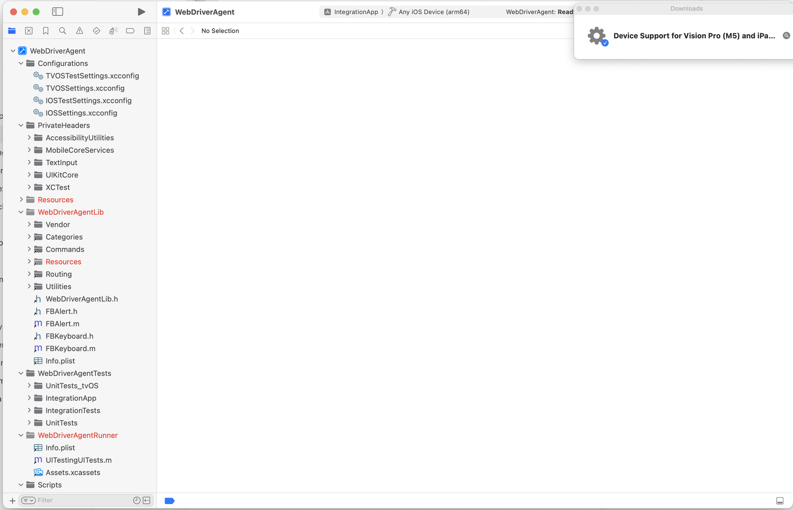
13. Understand the signing failure
If Xcode shows this error, the project has no development team selected:
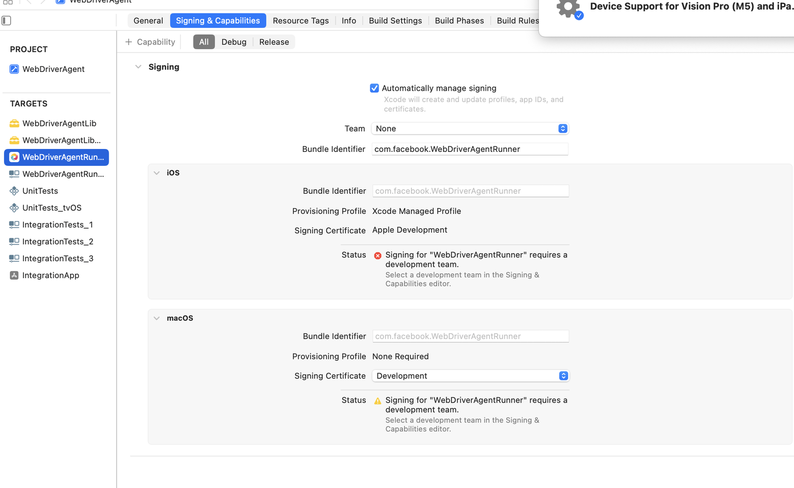
There are two valid ways to fix it.
Recommended for repeatable Appium sessions:
- Do not manually edit the Appium-installed WebDriverAgent project.
- Pass signing values as Appium capabilities.
- Use
appium:xcodeOrgId,appium:xcodeSigningId, andappium:updatedWDABundleId.
Manual Xcode fallback:
- Select
WebDriverAgentRunner. - Open
Signing & Capabilities. - Choose your team.
- Change the bundle identifier to something unique, for example
com.example.WebDriverAgentRunner. - Let Xcode create a managed provisioning profile.
Start Appium
14. Start the Appium server
Run:
Expected output shape:
[Appium] Welcome to Appium v3.5.2
[Appium] Appium REST http interface listener started on http://0.0.0.0:4723
Leave this terminal running.
From another terminal, check server status:
Expected output shape:
15. Create a real-device session
Replace placeholders before running:
<device-name><ios-version><device-udid><team-id><unique-wda-bundle-id>
curl -sS -X POST http://127.0.0.1:4723/session \
-H 'Content-Type: application/json' \
-d '{
"capabilities": {
"alwaysMatch": {
"platformName": "iOS",
"appium:automationName": "XCUITest",
"appium:deviceName": "<device-name>",
"appium:platformVersion": "<ios-version>",
"appium:udid": "<device-udid>",
"appium:bundleId": "com.apple.Preferences",
"appium:xcodeOrgId": "<team-id>",
"appium:xcodeSigningId": "Apple Development",
"appium:updatedWDABundleId": "<unique-wda-bundle-id>",
"appium:wdaLaunchTimeout": 120000,
"appium:newCommandTimeout": 120
},
"firstMatch": [{}]
}
}'
Expected output shape:
{
"value": {
"sessionId": "<appium-session-id>",
"capabilities": {
"platformName": "iOS",
"automationName": "XCUITest"
}
}
}
Keep the sessionId. The examples below use:
Verify Control
16. Take a screenshot
curl -sS "http://127.0.0.1:4723/session/$SID/screenshot" \
| python3 -c 'import sys,json,base64; print(json.load(sys.stdin)["value"])' \
| base64 --decode > iphone-appium-screenshot.png
file iphone-appium-screenshot.png
Expected output:
17. Read UI source
Expected output shape:
18. Tap a harmless coordinate
This example taps near the center of the screen. Use it only on a harmless screen such as Settings.
curl -sS -X POST "http://127.0.0.1:4723/session/$SID/actions" \
-H 'Content-Type: application/json' \
-d '{
"actions": [{
"type": "pointer",
"id": "finger1",
"parameters": { "pointerType": "touch" },
"actions": [
{ "type": "pointerMove", "duration": 0, "x": 190, "y": 320, "origin": "viewport" },
{ "type": "pointerDown", "button": 0 },
{ "type": "pause", "duration": 80 },
{ "type": "pointerUp", "button": 0 }
]
}]
}'
Expected output:
19. Press Home
curl -sS -X POST "http://127.0.0.1:4723/session/$SID/execute/sync" \
-H 'Content-Type: application/json' \
-d '{"script":"mobile: pressButton","args":[{"name":"home"}]}'
Expected output:
20. Open Settings again
curl -sS -X POST "http://127.0.0.1:4723/session/$SID/appium/device/activate_app" \
-H 'Content-Type: application/json' \
-d '{"bundleId":"com.apple.Preferences"}'
Expected output:
21. End the session
Always delete the Appium session when finished:
Expected output:
Stop the Appium server with Ctrl+C.
Reliability Test
Before building a wrapper, MCP bridge, or WDIO layer, prove raw Appium works.
Run 10 cycles manually or from a small script:
- Take screenshot.
- Get UI source.
- Tap a harmless coordinate.
- Swipe or scroll.
- Press Home.
- Open Settings.
Pass condition:
- 10 consecutive cycles complete without WDA crash.
- The USB device does not disconnect.
- Appium does not lose the session.
- Screenshots and source are returned in every cycle.
On this Mac and iPhone, the raw Appium stack completed 10 consecutive cycles successfully on 2026-06-25.
Troubleshooting
| Symptom | Check | Fix |
|---|---|---|
xcrun xctrace list devices does not show the iPhone |
USB cable, trust state, unlocked phone | Reconnect USB, unlock iPhone, accept Trust This Computer. |
| Appium session fails with signing error | Xcode account, certificate, team ID, WDA bundle ID | Add Apple account in Xcode, create Apple Development certificate, use a unique appium:updatedWDABundleId. |
| iPhone says developer app is not trusted | iPhone developer profile | Open Settings -> General -> VPN & Device Management and trust the developer app. |
| WDA launch times out | Phone locked or Developer Mode off | Unlock phone, confirm Developer Mode is on, retry session creation. |
appium driver list --installed does not show xcuitest |
Driver installation | Run appium driver install xcuitest. |
| Appium hangs during a command | WDA or XCTest is stuck | Delete the session, stop Appium, unlock phone, restart Appium. |
| Device disappears during test | USB instability | Use a known-good cable and avoid USB hubs during first setup. |
| Xcode asks for iOS platform support | Missing Xcode device support | Let Xcode install required platform/device support components. |
Security Notes
- Do not publish UDIDs, serial numbers, Apple IDs, team IDs, or signing keys.
- Do not share Apple account passwords, OTPs, private keys,
.p12files, or recovery codes. - Use a unique WDA bundle ID per developer or machine.
- Keep screenshots redacted before publishing.
- Prefer raw Appium first. Add WDIO, MCP, or other wrappers only after Appium itself is stable.
References
- Appium Install Appium: Appium installation and server startup.
- Appium XCUITest Device Preparation: real-device requirements such as trusted device, Developer Mode, UI Automation, and provisioning.
- Appium XCUITest Capabilities:
xcodeOrgId,xcodeSigningId,updatedWDABundleId, and WDA timeout capabilities. - Homebrew Installation: Homebrew install command and shell setup.
- Apple Xcode: Xcode toolchain overview.
Maintenance Notes
- Update command outputs when Appium, Xcode, or iOS versions change.
- Keep all screenshots in
docs/assets/ios-real-device-appium-control/. - Keep raw screenshots out of the repository because they often contain Apple IDs, UDIDs, serial numbers, or installed app names.
- Re-run
mkdocs build --strictafter each edit.